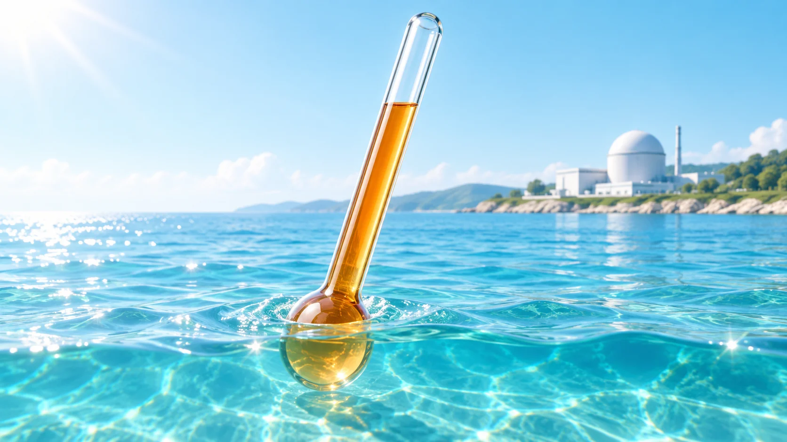
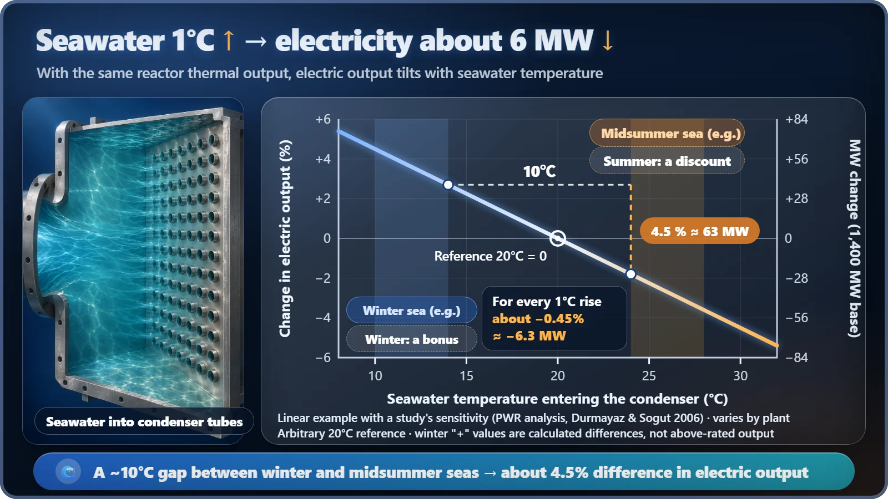

Plant Operation, Control & the Grid · 235
1°C of Seawater, 6 MW of Electricity — How Cooling-Water Temperature Affects a Nuclear Plant's Efficiency
Same reactor heat, different sea: the cooling water's temperature sets the last few percent of a nuclear plant's electric output.

The colder the seawater cooling a nuclear plant's condenser, the more electricity it makes from the same reactor heat. Studies put the effect at roughly 0.4 to 0.5% of electric output per 1°C, about 6 MW for a 1,400 MW plant. In summer, environmental and safety temperature limits can also force a plant to cut output or shut down. [1]
A forecast for the sea and the grid
Today's sea forecast: coastal water temperature off the east coast 26°C, up 1°C from yesterday.
Power plant electric output forecast: slightly cloudy.
There's no forecast like this, but if there were, it would be pretty accurate. A nuclear power plant makes a little less electricity every time the seawater warms by 1°C, even though its reactor puts out exactly the same heat as yesterday. Today's topic is the effect of cooling-water temperature on generating efficiency: how the sea's body temperature changes a power plant's report card.
Why the air conditioner struggles in midsummer
Start with the outdoor unit of an air conditioner. It dumps the heat collected from your room into the outside air. But what about a 35°C day? It's hard to dump heat into hot air, so the room gets less cool on the same electricity.
A power plant is the same kind of machine running in reverse. An air conditioner uses electricity to move heat; a power plant extracts electricity from heat flowing from a hot place to a cold one. And both machines' performance depends on how cold the thing they dump heat into is.
For a nuclear plant, that "thing" is seawater. Steam leaving the turbine is cooled in the condenser (a huge heat exchanger that turns steam back into water), and the water that picks up the steam's heat as it passes through tens of thousands of thin tubes in the condenser is the cooling water. All of South Korea's nuclear plants are on the coast, so they draw in seawater, pass it through once, and send it back.
One easy point of confusion: this cooling water is not the water that cools the reactor (the coolant). The two never even mix. Cooling water is water that takes away leftover heat, so colder water doesn't cool the reactor down; it produces more electricity.
What happens when the sea warms by 1°C
A quick look at the principle. The temperature at which steam turns to water in the condenser is set roughly by "seawater inlet temperature + how much the seawater warms passing through the tubes + a small margin." When the seawater gets warmer, that temperature follows it up, and so does the pressure inside the condenser. From the turbine's point of view, the "floor" it lets the steam down to has risen, so it extracts less work from the same steam.
By how much? A study analyzing a pressurized water reactor found that with the same reactor heat, a 1°C rise in cooling-water temperature cuts electric output by about 0.45%, and a study of European nuclear plants' operating records reported a similar size. Remember it as roughly 0.4 to 0.5% per 1°C. [1] [2]
Percentages are hard to feel. Apply 0.45% to a nuclear plant with a net output of about 1,400 megawatts (MW) and you get about 6 MW per 1°C. A 10°C difference in seawater means about 4.5%, roughly 63 MW. The reactor stays the same, yet output rises and falls this much with water temperature alone.

The seas around South Korea swing by roughly 10°C or more over the seasons. So the same plant makes a little more electricity in winter and a little less in summer. It's not a fault or an anomaly; it's a natural seasonal swing created by the laws of thermodynamics. The actual size varies from plant to plant with condenser size and turbine design, and in very cold water there's a range where the gain stops growing.
Operators therefore calculate this swing in advance and build it into seasonal power supply plans. The sea is out of their hands, but some things can be managed. If shellfish or slime build up inside the condenser tubes, heat doesn't pass through as well and output drops further at the same water temperature. Keeping the tubes clean is how plants protect a few megawatts in summer. For the APR1400, South Korea's newest reactor design, the share of reactor heat that goes into the sea alone is about 2,500 MW, so even small temperature differences can't be ignored.
In summer there's a slope, and there are thresholds
A plant in midsummer worries about more than this gentle slope. There are also thresholds it must not cross.
The first is an environmental threshold: a temperature limit on returning warmed cooling water (thermal discharge), set to protect fish and ecosystems. In South Korea, nuclear plants' thermal discharge typically leaves about 7°C warmer than the intake. France's Golfech plant, which uses river water, is regulated so that the daily average temperature of the river downstream, after the discharge mixes in, stays at or below 28°C, so it cuts output or shuts down during heat waves. According to the French utility EDF, electricity lost this way since 2000 has averaged about 0.3% of annual generation. [4]
The second is a safety threshold. Seawater that cools a nuclear plant's safety equipment must be at or below the design temperature for the safety analysis to hold. In the summer of 2012, Millstone Unit 2 in the United States shut down for 12 days when its intake seawater exceeded the limit then in its license, about 23.9°C (75°F). In South Korea, Saeul Units 1 and 2 had a design seawater temperature of 31.6°C, and in August 2017 the water at Unit 1 reached 31.2°C. After its cooling margin was evaluated, the Nuclear Safety and Security Commission approved raising it to 34.9°C in 2022. In the summer of 2024, seawater at Hanbit Unit 1 on the west coast reached about 33.9°C (design 36.0°C). [3] [5]
![Table contrasting the slope (about 0.45 percent output loss per degree, set by thermodynamics) with thresholds (environmental and safety temperature limits that force derating or shutdown), above a 10 to 36 degree Celsius ruler marking Millstone Unit 2's 2012 intake limit of 23.9 degrees, Golfech's 28 degree downstream river limit, Saeul Units 1 and 2's design seawater temperature raised from 31.6 to 34.9 degrees, and observed peaks of 31.2 degrees at Saeul 1 in 2017 and 33.9 degrees at Hanbit 1 in 2024](../../assets/images/theory/235-cooling-water-temperature/fig2-summer-thresholds.webp)
The slope takes away electricity a little at a time; the thresholds cut output or stop the plant outright. As seas slowly warm, both are becoming increasingly important homework for plant operators.
Three misconceptions, briefly
- "If output drops in summer, the plant is broken." No. The reactor puts out the same heat. What drops is the share of heat that becomes electricity.
- "Thermal discharge is radioactive wastewater." The thermal discharge issue is about temperature. Condenser cooling water doesn't mix with water from the reactor systems.
- "It's a weakness unique to nuclear." Coal and gas plants that spin turbines with steam are affected by the same principle.
The power plant takes the sea's temperature
To sum up, a nuclear plant's electric output isn't set by reactor heat alone. How cold the sea receiving that heat is decides the last few percent: about 0.4 to 0.5% per 1°C, or about 6 MW for a 1,400 MW plant. And in summer, environmental and safety thresholds sit on top of that slope. That's why nuclear plants are built on the coast, and why operators check the water temperature chart every day.